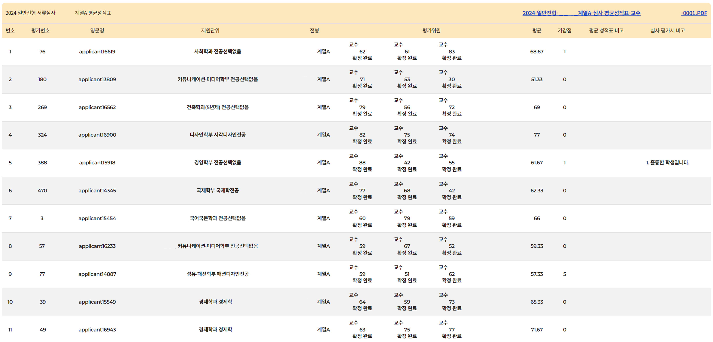
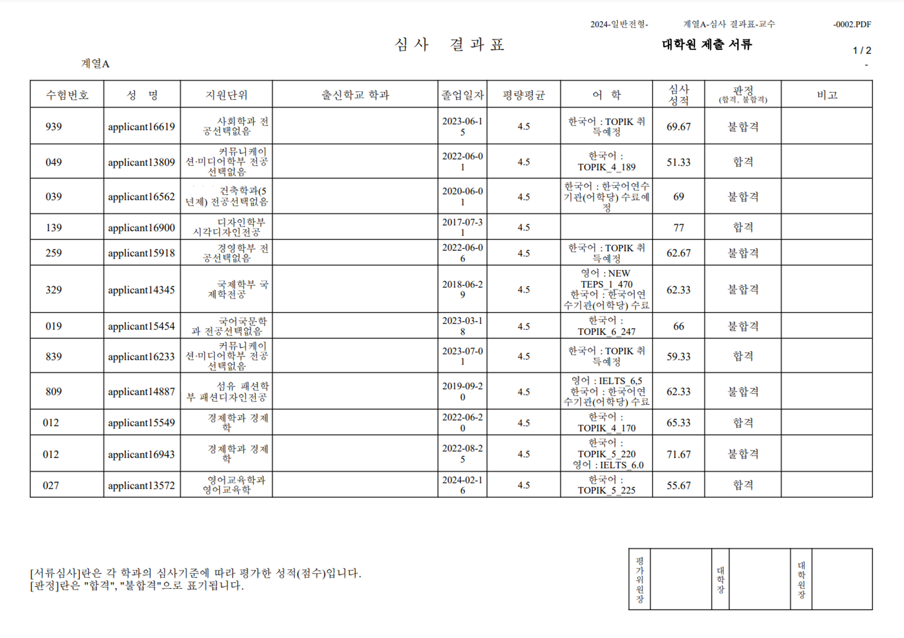
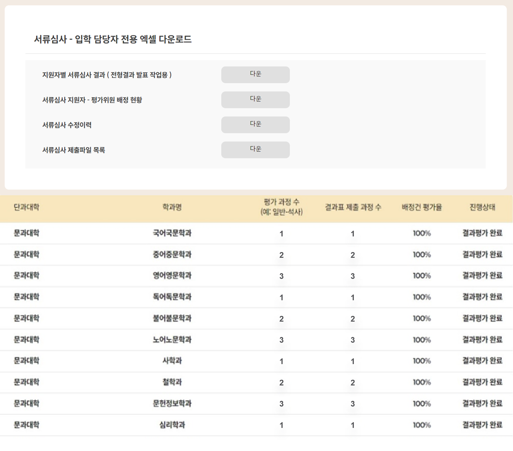
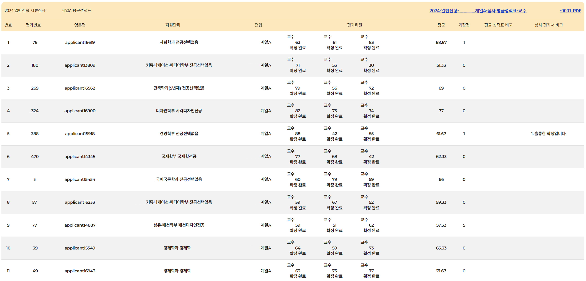
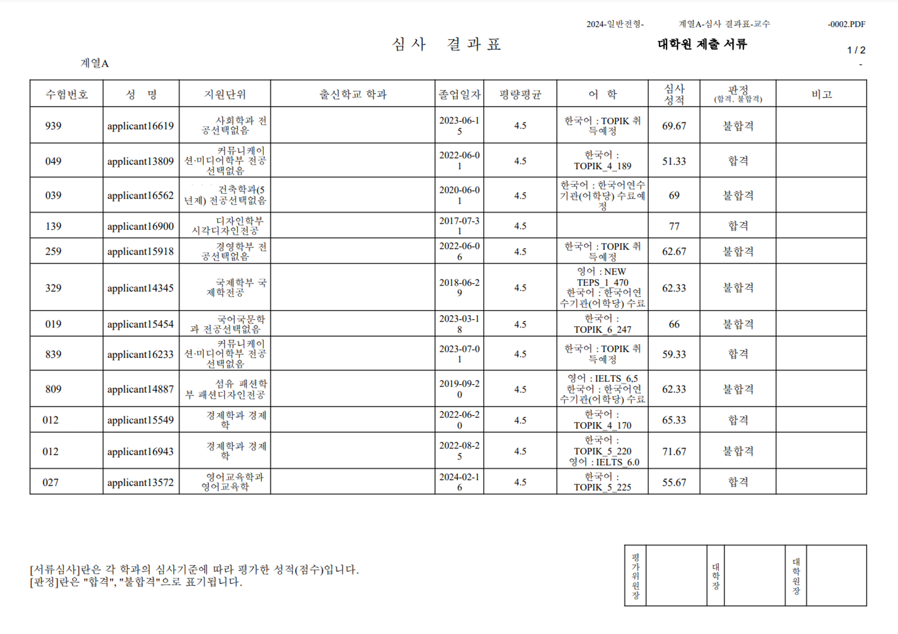
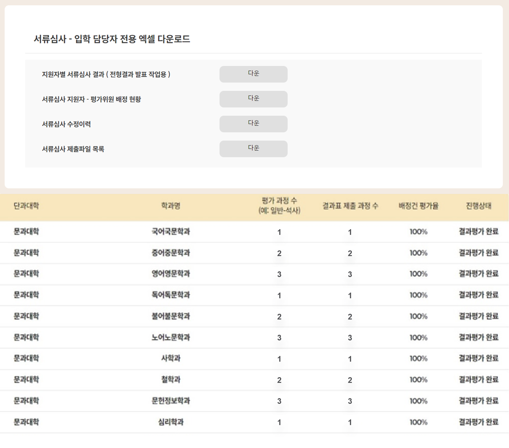
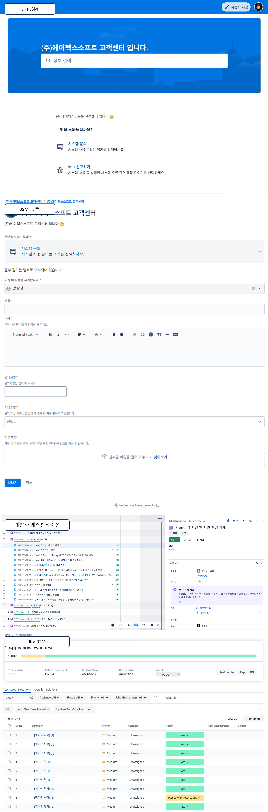

21.07 ~ 0 Years of Experience
Work Experience
2021.07-현재
FE/BE Web Developer
(주)에이펙스소프트B2B 서비스, SI 프로젝트 등 Web 서비스 설계 > 개발 > 운영
Vue.js(JS/TS), Spring Boot(Kotlin/JPA), AWS Infra, MySQL
주요 업무• 요구사항 도출부터 설계까지 전 과정 참여
• Vue.js + Spring Boot 기반의 웹 서비스 개발 경험
• AWS 인프라를 활용한 CI/CD 환경 설계 및 운영
• Jira(RTM, JSM) 기반의 체계적인 유지보수 및 운영 프로세스 구축
Projects
[B2B] Y대학교 지원자 평가 시스템
 





(주)에이펙스소프트
2021.07-2021.12
담당 업무 : 업무분석, 유스케이스 작성, 화면 설계, FE/BE, 운영 및 유지보수
기술 스택 : Vue.js(JS), Gradle & Spring Boot 기반 멀티모듈 프로젝트

설계 과정도 간략히 보기
클라이언트와의 소통부터 개발 사이에 다음과 같은 과정이 포함됩니다.
> 시스템 개요
Domain Driven 설계 기반 서버 아키텍처로 안정성과 확장성을 확보한 시스템
(주)에이펙스소프트 Applynow 원서접수 시스템에서 지원자 데이터 추출·검증·변환
변환된 데이터를 활용한 지원자 평가 프로세스 운영
AWS S3를 통한 평가 문서 CRUD 관리
> 사용자 흐름
(1) 개별 평가위원의 지원자 내용 조회 및 평가
(2) 평가 관리자의 평가 내용 취합 및 결과 문서 생성
(3) 생성된 평가 결과 문서를 바탕으로 각 학교에서 합격자 공지 등
(4) 입학 담당자는 평가 진행 상황을 모니터링 하며 평가 운영
(5) 시스템 담당자는 학교 요청에 따라 필요한 로그 등 제공
> 주요 기능
■ S3 스토리지를 활용해 제출 파일을 PDF로 조회하며 평가 진행
■ 평가 내용을 Apache POI로 엑셀 업/다운로드, 평가 결과를 BIRT 모듈로 PDF 결과표 제공
■ SES 기반 메일링 서비스로 비밀번호 분실·알림 등 주요 메시지 자동 발송
> 서지로 평가 및 관리되던 연세대학교의 평가 업무를 시스템으로 전환 한 성과
1. 시간·장소 제약 없는 온라인 평가 환경 제공
- 평가자가 각자의 일정에 맞춰 유연하게 참여할 수 있는 환경 제공
- 평가자가 각자의 일정에 맞춰 유연하게 참여할 수 있는 환경 제공
2. 입학담당자 권한으로 평가 진행 상황 실시간 모니터링 가능
- 관리자·담당자가 별도 보고 없이도 즉시 진행 현황을 파악하고 대응 가능
- 관리자·담당자가 별도 보고 없이도 즉시 진행 현황을 파악하고 대응 가능
3. 평가 이력·문서 저장 관리로 투명성 확보 및 문서 누락 위험 해소
- 과거 기록과 결과를 언제든 조회할 수 있어 재검증·분쟁 대응이 용이
- 과거 기록과 결과를 언제든 조회할 수 있어 재검증·분쟁 대응이 용이
[B2B / Platform] Applynow 지원자 평가 시스템
2023.07 - 2023.12(개발)
2023.12 - 유지보수 및 운영
담당 업무 : 업무분석, DB 재설계, 화면 및 API 재설계, 레거시 코드 리팩토링 및 MSA 서비스 연결, FE / BE, 운영 및 유지보수
기술 스택 : Vue.js(JS), Gradle & Spring Boot 기반 멀티모듈 프로젝트
> 시스템 개요
Y대학교 전용 지원자 평가 시스템을 다수 고객이 활용 가능한 멀티 B2B 환경으로 리팩토링 및 마이그레이션
단일 B2B 서비스를 Recursive DB 및 화면 설계 기반으로 리팩토링하여 유연하고 확장성 있는 플랫폼으로 전환
가능한 DB에 저장 된 값으로만 여러 로직을 분기해 실행 할 수 있는 구조로 DB 세팅
클라이언트(학교)별 프로세스에 따라 유동적으로 화면의 흐름 제어 / 분기 등
공통으로 사용 할 수 없거나 특정 클라이언트만 행할 수 있는 프로세스는 클라이언트 코드(PK)를 기준으로 로직 분기
> 시스템 관리자 흐름
- Y대학교 전용으로 개발되었던 평가 시스템과 사용자 시나리오는 같음
(1) 새로운 클라이언트(학교)의 평가 시스템 사용 요청
(2) 각 학교별 평가 프로세스 확인 후 데이터, 화면 등 세팅
(3) 테스트 서버 오픈 후 클라이언트와 수정 필요한 내용이나 추가 요구사항 도출
(4) 완료 후 운영(product) 서비스 오픈
주요 기능
■ 서로 다른 DB를 참조할 수 있는 멀티 데이터베이스 환경 구축
■ 서비스 레이어가 아닌 도메인 수준에서 요구사항을 처리할 수 있도록 DB 구조 재설계
■ Vue.js 컴포넌트 기반 개발 방식으로 화면 재구성
■ Zoom API 연동을 통한 비대면 면접 프로토타입 개발
단일 B2B 서비스에서 멀티 B2B 서비스로 전환한 성과
1. 새로운 클라이언트 추가 시 설계부터 진행하던 구축 비용과 시간을 절감
- 신규 고객 요청이 발생해도 기존 구조를 활용해 빠르게 서비스 온보딩 가능
- 신규 고객 요청이 발생해도 기존 구조를 활용해 빠르게 서비스 온보딩 가능
2. 공통 로직은 재사용하고 클라이언트별 차이점만 반영하여 개발 및 테스트 효율성 강화
- 동일한 기능을 반복 구현할 필요가 없어 오류 가능성이 줄고 검증 과정이 간소화
- 동일한 기능을 반복 구현할 필요가 없어 오류 가능성이 줄고 검증 과정이 간소화
[Internal] 대학원 지원/평가정보 설정 시스템
(주)에이펙스소프트
2022.06-2022.12
담당 업무 : 화면·유스케이스 설계, DB 재설계, FE/BE 개발
초반 개발 참여 후 평가시스템 부분 담당 개발
기술 스택 : Vue.js(JS), Gradle & Spring Boot 기반 멀티모듈 프로젝트
시스템 개요
원서접수·평가 시스템에서 사용하는 Recursive 데이터를 DB 직접 수정 없이 화면에서 구성할 수 있는 인터널 소프트웨어
하나의 인증정보로 여러 서비스를 이용할 수 있는 통합 구조
대학원별 상이한 모집요강(다양한 비즈니스 규칙)을 화면에서 설정 가능
(주)에이펙스소프트의 입학지원 시스템과 선발평가 시스템 간 데이터 연동을 효율적으로 설계
주요 기능
■ Recursive 데이터 CRUD를 위한 트리 구조 DB 설계 및 재귀 참조형 컴포넌트 구현
■ 단일 서비스에서 생성된 데이터를 API 기반으로 공유할 수 있도록 MSA 아키텍처(Gateway) 적용
■ 사용자 정보를 단일 DB에서 관리하고 타 서비스와 연동 가능하도록 설계
■ 인증·권한 부여 서비스를 분리 구축하고, JWT 기반 토큰 인증 절차 유지
Recursive한 데이터를 응용 단계에서 CRUD한 성과
1. 재귀 구조 데이터를 DB에 직접 접속하지 않고 화면에서 구성할 수 있어 개발·운영 업무 효율성 향상
- 반복적인 SQL 작업이 줄어들어 개발자가 더 중요한 로직 구현에 집중 가능
- 반복적인 SQL 작업이 줄어들어 개발자가 더 중요한 로직 구현에 집중 가능
2. 수작업으로 인한 휴먼 에러를 최소화하고, 데이터 정합성을 안정적으로 유지
- 잘못된 입력이나 누락으로 발생하던 장애를 예방해 운영 안정성 확보
- 잘못된 입력이나 누락으로 발생하던 장애를 예방해 운영 안정성 확보
3. 서비스 간 공유되는 데이터 구조를 일관되게 관리할 수 있어 유지보수 및 확장 용이
- 신규 기능 추가나 타 시스템 연동 시 별도 수정이 적어 개발 속도 향상
- 신규 기능 추가나 타 시스템 연동 시 별도 수정이 적어 개발 속도 향상
[SI] 이음아트플랫폼
(주)에이펙스소프트/한국장애인문화예술원
2024.03 - 2026.01(SM)
담당 업무 : 설계(화면, 유스케이스, DB 등), FE / BE, 운영 및 유지보수 일부
기술 스택 : Vue.js(JS/TS), Gradle & Spring Boot 기반 멀티모듈 프로젝트
시스템 개요
장애예술인의 웹 서비스 이용을 보장하기 위해 웹표준·접근성 지침을 준수한 설계 및 개발
서비스 이용이 보다 용이하도록 주요 기능은 모바일 반응형으로 개발(창작물 바로 찍어 업로드 등)
장애예술인의 창작물(미술품, 공예품 등)을 온라인 갤러리에서 감상할 수 있는 UI/UX 제공
공공기관 운영 실적 관리 기능을 포함하여 행정·업무 시스템의 역할도 수행
> 사용자 흐름
(1) 장애예술인의 개인 포트폴리오/창작물 업로드
(2) 구매자는 플랫폼에서 원하는 창작물에 대해 구매 의사 표현
(3) 공공기관은 창작물 구매 내용이나 실적을 플랫폼에 업로드
(4) 관리자는 플랫폼 전반에 대한 문의사항 처리 및 기관의 실적 업로드 내용 확인
(5) 시스템 담당자는 기술적 문제나 예외 상황에 대한 대응
주요 기능
■ 장애예술인 창작물 업로드 및 개인 포트폴리오 작성
■ 오프라인 기획전 내용 메일링 서비스 및 참가신청/기획전 관리
■ 공공기관의 창작물 구매 실적 입력 제출 프로세스를 온라인으로 대체
■ 관리자의 플랫폼 이용 현황, 통계, 대시보드 등 관리메뉴 제공
장애예술인을 위한 웹 서비스 개발 성과
1. 장애예술인이 온라인에서도 창작 활동을 지속하고 전시·공연 정보를 접할 수 있는 환경 제공
- 물리적 이동의 제약 없이 작품 등록과 정보 탐색이 가능해 활동 기회 확대
- 물리적 이동의 제약 없이 작품 등록과 정보 탐색이 가능해 활동 기회 확대
2. 기업·구매자가 장애예술인의 창작물을 쉽게 접할 수 있도록 온라인 접근 경로 확대
- 기존 오프라인 전시 의존에서 벗어나 언제든지 작품을 감상·구매할 수 있는 채널 확보
- 기존 오프라인 전시 의존에서 벗어나 언제든지 작품을 감상·구매할 수 있는 채널 확보
CSR 과정도 간략히 보기
테스트 및 CSR 과정은 다음과 같이 진행됩니다.

Skills & Tools
Front-End
Vue.js(JS/TS)
현실의 업무 프로세스를 온라인에 구현하고, 사용자 중심 설계로 사용성을 높입니다.
- 복잡한 폼과 유효성 검증, 반응형 UI를 체계적으로 설계·구현
- 대화형 테이블·차트·파일 업로드 등 실무 기능의 컴포넌트화 및 재사용성 강화
- 로그 분석과 사용자 피드백을 바탕으로 화면 흐름과 인터랙션을 지속 개선
Back-End
Spring Boot(Kotlin/JPA)
도메인 주도 설계(DDD)와 CQRS로 복잡한 규칙을 명확히 모델링하고, 안정적인 서비스를 제공합니다.
- 조회·갱신 경로 분리 및 쿼리 최적화로 일관된 응답성과 신뢰성 확보
- REST API 설계, 인증·인가, 배치 메일링 등 운영 시나리오 전반의 품질 관리
Tools
Slack, Jira, AWS
협업과 운영 전 과정을 도구화하여 요구사항 관리부터 배포·모니터링까지 체계화합니다.
- Jira RTM으로 요구→테스트 추적 체계 수립, JSM으로 문의→개발 태스크 전환
- AWS(EC2/RDS/S3/SES/CloudWatch 등) 기반 운영과 로그·알림을 통한 안정적 서비스 유지
- 배포 자동화 파이프라인 적용으로 릴리스 주기 단축 및 롤백 절차 간소화